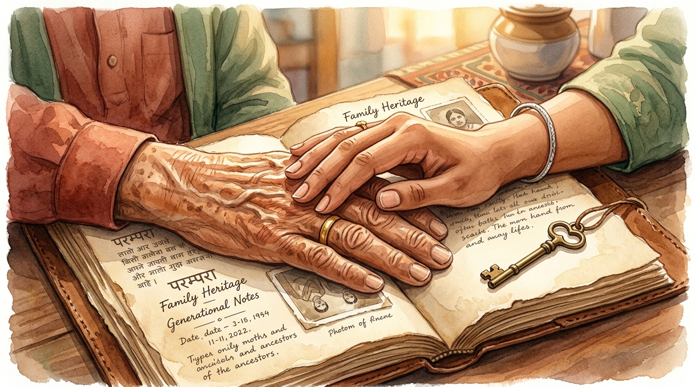

INNOVATION STORY
The SURELY Journey
How twenty ordinary minutes transform generational uncertainty into lasting family peace of mind.
"It didn't need a crisis. It needed twenty ordinary minutes."
Beat 1 · Problem
Scattered Memories
A generation of hard-earned savings trapped across drawers, passbooks, and aging memory.
Beat 2 · Insight
Dignity First
Parents don't resist sharing information; they resist feeling monitored or losing control.
Beat 3 · Scale
₹78,213 Cr Blindspot
Over 150M seniors and millions of families navigate this invisible national crisis every year.
Beat 4 · Solution
The Shared Ledger
A calm, collaborative memory checklist with privacy masking and instant emergency clarity.
Beat 5 · Outcome
Peace of Mind
Generations connected over tea, confident that when it matters, everyone knows where to look.

The key to what your family already owns — kept safely, together.